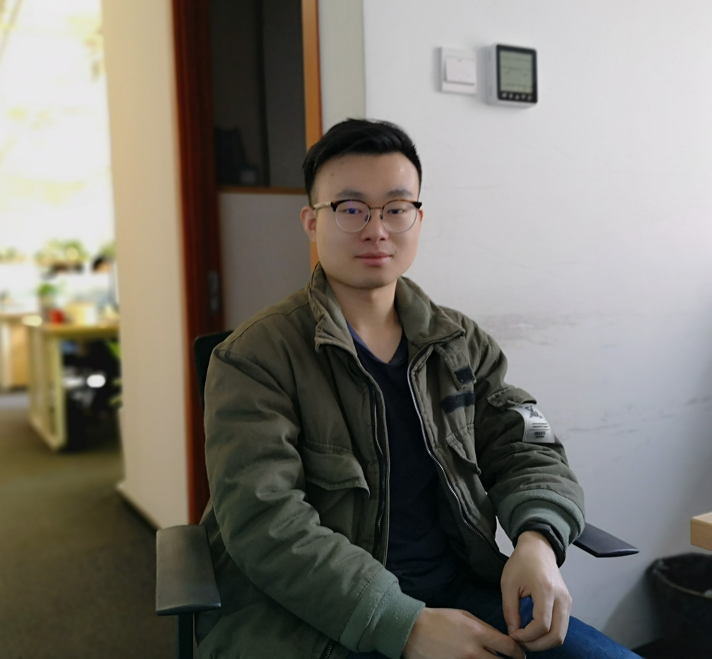

🎓 Dr. Xiaohan Chen陈霄汉
🧑💻 Postdoctoral Research Fellow 


|
 |
👨🎓 Academic Profile
Dr. Xiaohan Chen is a Postdoctoral Research Fellow at the KIOS Research and Innovation Center of Excellence, University of Cyprus, working on the European Research Council Water Futures project under the supervision of Prof. Marios Polycarpou. He earned his Ph.D. in Electrical Engineering and Electronics from the University of Liverpool in 2024, supervised by Prof. Rui Yang and Prof. Roberto Ferrero. Dr. Chen's current research focuses on explainable AI for fault isolation in drinking water distribution systems. He has published over 15 high-impact journal and conference papers and actively serves as a reviewer for 20+ leading international journals including IEEE TNNLS, IEEE TII, Engineering Applications of Artificial Intelligence, and Expert Systems with Applications.
Interpretable machine learning for safety-critical applications
Cross-domain knowledge transfer and few-shot learning
Graph-based modeling for complex system analysis
Smart monitoring and fault isolation in water networks
Industrial machinery and critical infrastructure monitoring
Time-series analysis for predictive maintenance
* indicates corresponding author • For a complete list, see my Google Scholar profile
📑 Journal Papers
CoWS: Self-Supervised Representation Pre-Training for Cross-Machine Fault Diagnosis
Xiaohan Chen, Rui Yang, Yihao Xue, Zidong Wang
IEEE Transactions on Emerging Topics in Computational Intelligence, 2026 [Code]
Dual Attention-Guided Ensemble Framework for High-Speed Train Fault Diagnosis: Optimizing Multiscale Features From Multiple Sensors
Yihao Xue, Rui Yang, Xiaohan Chen, Yifan Zhan, Baoye Song, Zidong Wang
IEEE Transactions on Intelligent Transportation Systems, 2025
Joint Attention-Guided Multitask Feature Sharing Network for High-Speed Train Fault Diagnosis
Yihao Xue, Rui Yang, Xiaohan Chen, Baoye Song, Zidong Wang
IEEE Transactions on Instrumentation and Measurement, 2025
Separable Convolutional Network-Based Fault Diagnosis for High-Speed Train: A Gossip Strategy-Based Optimization Approach
Yihao Xue, Rui Yang, Xiaohan Chen, Baoye Song, Zidong Wang
IEEE Transactions on Industrial Informatics, 2024
A Review on Transferability Estimation in Deep Transfer Learning
Yihao Xue, Rui Yang, Xiaohan Chen, Weibo Liu, Zidong Wang, Xiaohui Liu
IEEE Transactions on Artificial Intelligence, 2024
TFPred: Learning Discriminative Representations from Unlabeled Data for Few-Label Rotating Machinery Fault Diagnosis
Xiaohan Chen, Rui Yang, Yihao Xue, Baoye Song, Zidong Wang
Control Engineering Practice, 2024 [Code]
A Novel Momentum Prototypical Neural Network to Cross-Domain Fault Diagnosis for Rotating Machinery Subject to Cold-Start
Xiaohan Chen, Rui Yang, Yihao Xue, Chao Yang, Baoye Song, Maiying Zhong.
Neurocomputing, 2023
A Novel Local Binary Temporal Convolutional Neural Network for Bearing Fault Diagnosis
Yihao Xue, Rui Yang, Xiaohan Chen, Zhongbei Tian, Zidong Wang.
IEEE Transactions on Instrumentation and Measurement, 2023
Deep Transfer Learning for Bearing Fault Diagnosis: A Systematic Review Since 2016
Xiaohan Chen, Rui Yang, Yihao Xue, Mengjie Huang, Roberto Ferrero, Zidong Wang
IEEE Transactions on Instrumentation and Measurement, 2023 🏆 ESI Highly Cited 🔥 ESI Hot Paper
Bearing Fault Diagnosis Base on Multi-scale CNN and LSTM Model
Xiaohan Chen, Beike Zhang, Dong Gao
Journal of Intelligent Manufacturing, 2021 [Code] 🏆 ESI Highly Cited
🎤 Conference Papers
A Ranked Contamination Diagnosis Method for Water Distribution Systems Using Spatio-Temporal Graph Neural Networks
Xiaohan Chen, Marios M. Polycarpou
2025 6th International Conference on Control and Fault-Tolerant Systems (SysTol), Ayia Napa, Cyprus
Multi-Modal Self-Supervised Learning for Cross-Domain One-Shot Bearing Fault Diagnosis
Xiaohan Chen, Yihao Xue, Mengjie Huang, Rui Yang
2024 IFAC Symposium on Fault Detection, Supervision, and Safety for Technical Processes (SAFEPROCESS), Ferrara, Italy
Transfer Learning with Unsupervised Domain Adaptation Method for Bearing Fault Diagnosis
Xiaohan Chen, Rui Yang, Huiqing Wen, Steven Guan
2021 CAA Symposium on Fault Detection, Supervision, and Safety for Technical Processes (SAFEPROCESS), Chengdu, China
🎓 Academic Fellowships
ERC Water Futures Project, University of Cyprus (2024-now)
Ph.D. Scholarship (Full funding), University of Liverpool (2021-2024)
🏅 Academic Recognition
Outstanding Student, Baidu Deep Learning Engineer Training Camp (2020)
National Graduate Scholarship, China (2017-2019, 3 consecutive years)
🌟 Community Service
Outstanding Volunteer, University of Miskolc Confucius Institute Summer Camp (2019)
📝 Journal Reviewer
• Annual Reviews in Control
• Control Engineering Practice
• Engineering Applications of Artificial Intelligence
• Electric Power Systems Research
• Expert Systems With Applications
• Information Fusion
• IEEE/CAA Journal of Automatica Sinica
• IEEE Transactions on Cybernetics
• IEEE Transactions on Instrumentation and Measurement
• IEEE Transactions on Intelligent Transportation Systems
• IEEE Transactions on Neural Networks and Learning Systems
• IEEE Transactions on Industrial Informatics
• ISA Transactions
• International Journal of Computer Applications in Technology
• International Journal of Electrical Power and Energy Systems
• Knowledge-Based Systems
• Machine Learning with Applications
• Measurement
• Mechanical Systems and Signal Processing
• Neurocomputing
• Ocean Engineering
• Pattern Recognition
• Process Safety and Environmental Protection
• Reliability Engineering & System Safety
• Results in Engineering
🎤 Conference Activities
Conference Reviewer:
• IEEE SmartGridComm (2025)
• ICECET (2024/2025)
• IEEE FAST (2023)
• CAA SAFEPROCESS (2021)
Presentations:
• 2025 SysTol, Ayia Napa, Cyprus
• 2024 IFAC SAFEPROCESS, Ferrara, Italy
• 2021 CAA SAFEPROCESS, Online
• 2019 IEEE ICMA, Tianjin, China
🌊 ERC Synergy Grant - Water Futures (Grant agreement No. 951424)
Funding Agency: European Research Council
Total Amount: €9.9M (Project total)
Role: Postdoctoral Research Fellow
PI: Prof. Marios Polycarpou
Focus: Explainable AI for water distribution system monitoring and fault diagnosis
🎓 Ph.D. Scholarship - University of Liverpool (2021-2024)
Funding Agency: University of Liverpool
Focus: Deep transfer learning for cross-domain fault diagnosis
🏢 Office Address
KIOS Research and Innovation Center of Excellence
University of Cyprus
1 Panepistimiou Avenue
2109 Aglantzia, Nicosia, Cyprus
🌐 Digital Presence
© 2025 Dr. Xiaohan Chen | Last updated: January 2026
🌟 Designing intelligent systems for a sustainable future